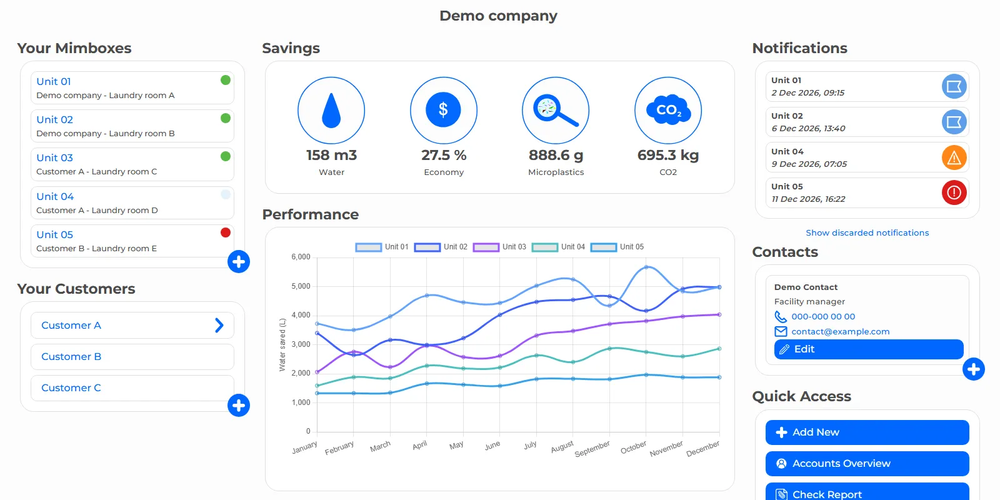

Mimbly event backend
The backend for Mimbly's water-recycling dashboard, my first customer project: I built it alone and was the team's contact with the customer.
- Period
- 2022-11 – 2022-12
- My role
- Backend developer, Scrum Master and the team's contact with the customer
- Team
- A FrontEdge IT team; two teammates built the dashboard front end
- Result
- The dashboard front end, built by two teammates in Next.js and React, read the events the backend stored.
- Status
- Handed over
- Built with
- C#, .NET 6, Azure Functions, Dapper, SQL, FluentValidation
- Made at
- FrontEdge IT

Summary
Mimbly makes units that recycle water for washing machines. FrontEdge IT built Mimboard 3.0 for them: a dashboard with views for admins, users and technicians, fed by events the units send. I built the backend that receives and stores those events, and I was the team's contact with the customer.
What I did
- Built the backend alone: an Azure Functions app in C# on .NET 6 that receives every event a unit sends — water started and ended, water to the washing machine, errors — and stores it with Dapper in SQL as an event log, wash statistics and an error log.
- Was in direct contact with the customer, telling them what the team could deliver and keeping their expectations realistic.
- Acted as Scrum Master: prioritised the team's work and created the backlog and the scope of the MVP.
Outcomes
- The dashboard front end, built by two teammates in Next.js and React, read the events the backend stored.
Decisions
One endpoint for every event
The units post every event to one address. The function reads the event's type and hands it to that type's model, so a new event type is one more case rather than a new function. The cost: adding a type means changing and redeploying the function that receives all the others.
Dapper and plain SQL
Each event is one plain insert, and Dapper with hand-written SQL kept those inserts visible and fast, with no mapping layer in between. The cost: every statement is written by hand and kept in step with the tables by hand.
Drop an incomplete event
An event with an empty field is logged as an error and dropped before anything is stored, so the event log and the wash statistics hold complete events only. The cost: a dropped event is gone. Only a log line remains, and the unit gets no reply saying it was dropped.
Cut what the events did not need
A week in, I redid the structure and removed entities and converters the backend did not need, so the code held only what the events needed.
Next: Spark Digital Showroom